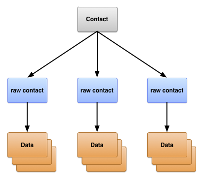
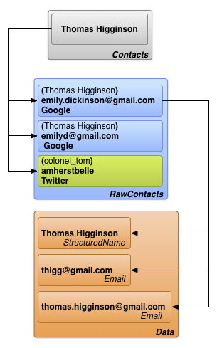
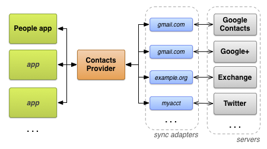

Quickview
- Android's repository of information about people.
- Syncs with the web.
- Integrates social stream data.
In this document
- Contacts Provider Organization
- Raw contacts
- Data
- Contacts
- Data From Sync Adapters
- Required Permissions
- The User Profile
- Contacts Provider Metadata
- Contacts Provider Access
- Contacts Provider Sync Adapters
- Social Stream Data
- Additional Contacts Provider Features
Key classes
ContactsContract.ContactsContactsContract.RawContactsContactsContract.DataContactsContract.StreamItems
Related Samples
See Also
The Contacts Provider is a powerful and flexible Android component that manages the device's central repository of data about people. The Contacts Provider is the source of data you see in the device's contacts application, and you can also access its data in your own application and transfer data between the device and online services. The provider accommodates a wide range of data sources and tries to manage as much data as possible for each person, with the result that its organization is complex. Because of this, the provider's API includes an extensive set of contract classes and interfaces that facilitate both data retrieval and modification.
This guide describes the following:
- The basic provider structure.
- How to retrieve data from the provider.
- How to modify data in the provider.
- How to write a sync adapter for synchronizing data from your server to the Contacts Provider.
This guide assumes that you know the basics of Android content providers. To learn more about Android content providers, read the Content Provider Basics guide. The Sample Sync Adapter sample app is an example of using a sync adapter to transfer data between the Contacts Provider and a sample application hosted by Google Web Services.
Contacts Provider Organization
The Contacts Provider is an Android content provider component. It maintains three types of data about a person, each of which corresponds to a table offered by the provider, as illustrated in figure 1:
Figure 1. Contacts Provider table structure.
The three tables are commonly referred to by the names of their contract classes. The classes define constants for content URIs, column names, and column values used by the tables:
-
ContactsContract.Contactstable - Rows representing different people, based on aggregations of raw contact rows.
-
ContactsContract.RawContactstable - Rows containing a summary of a person's data, specific to a user account and type.
-
ContactsContract.Datatable - Rows containing the details for raw contact, such as email addresses or phone numbers.
The other tables represented by contract classes in ContactsContract
are auxiliary tables that the Contacts Provider uses to manage its operations or support
specific functions in the device's contacts or telephony applications.
Raw contacts
A raw contact represents a person's data coming from a single account type and account name. Because the Contacts Provider allows more than one online service as the source of data for a person, the Contacts Provider allows multiple raw contacts for the same person. Multiple raw contacts also allow a user to combine a person's data from more than one account from the same account type.
Most of the data for a raw contact isn't stored in the
ContactsContract.RawContacts table. Instead, it's stored in one or more
rows in the ContactsContract.Data table. Each data row has a column
Data.RAW_CONTACT_ID that
contains the RawContacts._ID value of its
parent ContactsContract.RawContacts row.
Important raw contact columns
The important columns in the ContactsContract.RawContacts table are
listed in table 1. Please read the notes that follow after the table:
Table 1. Important raw contact columns.
| Column name | Use | Notes |
|---|---|---|
ACCOUNT_NAME
|
The account name for the account type that's the source of this raw contact.
For example, the account name of a Google account is one of the device owner's Gmail
addresses. See the next entry for
ACCOUNT_TYPE for more
information.
|
The format of this name is specific to its account type. It is not necessarily an email address. |
ACCOUNT_TYPE
|
The account type that's the source of this raw contact. For example, the account
type of a Google account is com.google. Always qualify your account type
with a domain identifier for a domain you own or control. This will ensure that your
account type is unique.
|
An account type that offers contacts data usually has an associated sync adapter that synchronizes with the Contacts Provider. |
DELETED
|
The "deleted" flag for a raw contact. | This flag allows the Contacts Provider to maintain the row internally until sync adapters are able to delete the row from their servers and then finally delete the row from the repository. |
Notes
The following are important notes about the
ContactsContract.RawContacts table:
-
A raw contact's name is not stored in its row in
ContactsContract.RawContacts. Instead, it's stored in theContactsContract.Datatable, in aContactsContract.CommonDataKinds.StructuredNamerow. A raw contact has only one row of this type in theContactsContract.Datatable. -
Caution: To use your own account data in a raw contact row, it must
first be registered with the
AccountManager. To do this, prompt users to add the account type and their account name to the list of accounts. If you don't do this, the Contacts Provider will automatically delete your raw contact row.For example, if you want your app to maintain contacts data for your web-based service with the domain
com.example.dataservice, and the user's account for your service isbecky.sharp@dataservice.example.com, the user must first add the account "type" (com.example.dataservice) and account "name" (becky.smart@dataservice.example.com) before your app can add raw contact rows. You can explain this requirement to the user in documentation, or you can prompt the user to add the type and name, or both. Account types and account names are described in more detail in the next section.
Sources of raw contacts data
To understand how raw contacts work, consider the user "Emily Dickinson" who has the following three user accounts defined on her device:
emily.dickinson@gmail.comemilyd@gmail.com- Twitter account "belle_of_amherst"
This user has enabled Sync Contacts for all three of these accounts in the Accounts settings.
Suppose Emily Dickinson opens a browser window, logs into Gmail as
emily.dickinson@gmail.com, opens
Contacts, and adds "Thomas Higginson". Later on, she logs into Gmail as
emilyd@gmail.com and sends an email to "Thomas Higginson", which automatically
adds him as a contact. She also follows "colonel_tom" (Thomas Higginson's Twitter ID) on
Twitter.
The Contacts Provider creates three raw contacts as a result of this work:
-
A raw contact for "Thomas Higginson" associated with
emily.dickinson@gmail.com. The user account type is Google. -
A second raw contact for "Thomas Higginson" associated with
emilyd@gmail.com. The user account type is also Google. There is a second raw contact even though the name is identical to a previous name, because the person was added for a different user account. - A third raw contact for "Thomas Higginson" associated with "belle_of_amherst". The user account type is Twitter.
Data
As noted previously, the data for a raw contact is stored in a
ContactsContract.Data row that is linked to the raw contact's
_ID value. This allows a single raw contact to have multiple instances of the same
type of data such as email addresses or phone numbers. For example, if
"Thomas Higginson" for emilyd@gmail.com (the raw contact row for Thomas Higginson
associated with the Google account emilyd@gmail.com) has a home email address of
thigg@gmail.com and a work email address of
thomas.higginson@gmail.com, the Contacts Provider stores the two email address
rows and links them both to the raw contact.
Notice that different types of data are stored in this single table. Display name,
phone number, email, postal address, photo, and website detail rows are all found in the
ContactsContract.Data table. To help manage this, the
ContactsContract.Data table has some columns with descriptive names,
and others with generic names. The contents of a descriptive-name column have the same meaning
regardless of the type of data in the row, while the contents of a generic-name column have
different meanings depending on the type of data.
Descriptive column names
Some examples of descriptive column names are:
-
RAW_CONTACT_ID -
The value of the
_IDcolumn of the raw contact for this data. -
MIMETYPE -
The type of data stored in this row, expressed as a custom MIME type. The Contacts Provider
uses the MIME types defined in the subclasses of
ContactsContract.CommonDataKinds. These MIME types are open source, and can be used by any application or sync adapter that works with the Contacts Provider. -
IS_PRIMARY -
If this type of data row can occur more than once for a raw contact, the
IS_PRIMARYcolumn flags the data row that contains the primary data for the type. For example, if the user long-presses a phone number for a contact and selects Set default, then theContactsContract.Datarow containing that number has itsIS_PRIMARYcolumn set to a non-zero value.
Generic column names
There are 15 generic columns named DATA1 through
DATA15 that are generally available and an additional four generic
columns SYNC1 through SYNC4 that should only be used by sync
adapters. The generic column name constants always work, regardless of the type of
data the row contains.
The DATA1 column is indexed. The Contacts Provider always uses this column for
the data that the provider expects will be the most frequent target of a query. For example,
in an email row, this column contains the actual email address.
By convention, the column DATA15 is reserved for storing Binary Large Object
(BLOB) data such as photo thumbnails.
Type-specific column names
To facilitate working with the columns for a particular type of row, the Contacts Provider
also provides type-specific column name constants, defined in subclasses of
ContactsContract.CommonDataKinds. The constants simply give a
different constant name to the same column name, which helps you access data in a row of a
particular type.
For example, the ContactsContract.CommonDataKinds.Email class defines
type-specific column name constants for a ContactsContract.Data row
that has the MIME type
Email.CONTENT_ITEM_TYPE. The class contains the constant
ADDRESS for the email address
column. The actual value of
ADDRESS is "data1", which is
the same as the column's generic name.
Caution: Don't add your own custom data to the
ContactsContract.Data table using a row that has one of the
provider's pre-defined MIME types. If you do, you may lose the data or cause the provider to
malfunction. For example, you should not add a row with the MIME type
Email.CONTENT_ITEM_TYPE that contains a user name instead of an email address in the
column DATA1. If you use your own custom MIME type for the row, then you are free
to define your own type-specific column names and use the columns however you wish.
Figure 2 shows how descriptive columns and data columns appear in a
ContactsContract.Data row, and how type-specific column names "overlay"
the generic column names
Figure 2. Type-specific column names and generic column names.
Type-specific column name classes
Table 2 lists the most commonly-used type-specific column name classes:
Table 2. Type-specific column name classes
| Mapping class | Type of data | Notes |
|---|---|---|
ContactsContract.CommonDataKinds.StructuredName |
The name data for the raw contact associated with this data row. | A raw contact has only one of these rows. |
ContactsContract.CommonDataKinds.Photo |
The main photo for the raw contact associated with this data row. | A raw contact has only one of these rows. |
ContactsContract.CommonDataKinds.Email |
An email address for the raw contact associated with this data row. | A raw contact can have multiple email addresses. |
ContactsContract.CommonDataKinds.StructuredPostal |
A postal address for the raw contact associated with this data row. | A raw contact can have multiple postal addresses. |
ContactsContract.CommonDataKinds.GroupMembership |
An identifier that links the raw contact to one of the groups in the Contacts Provider. | Groups are an optional feature of an account type and account name. They're described in more detail in the section Contact groups. |
Contacts
The Contacts Provider combines the raw contact rows across all account types and account names to form a contact. This facilitates displaying and modifying all the data a user has collected for a person. The Contacts Provider manages the creation of new contact rows, and the aggregation of raw contacts with an existing contact row. Neither applications nor sync adapters are allowed to add contacts, and some columns in a contact row are read-only.
Note: If you try to add a contact to the Contacts Provider with an
insert(), you'll get
an UnsupportedOperationException exception. If you try to update a column
that's listed as "read-only," the update is ignored.
The Contacts Provider creates a new contact in response to the addition of a new raw contact that doesn't match any existing contacts. The provider also does this if an existing raw contact's data changes in such a way that it no longer matches the contact to which it was previously attached. If an application or sync adapter creates a new raw contact that does match an existing contact, the new raw contact is aggregated to the existing contact.
The Contacts Provider links a contact row to its raw contact rows with the contact row's
_ID column in the Contacts
table. The CONTACT_ID column of the raw contacts table
ContactsContract.RawContacts contains _ID values for
the contacts row associated with each raw contacts row.
The ContactsContract.Contacts table also has the column
LOOKUP_KEY that is a
"permanent" link to the contact row. Because the Contacts Provider maintains contacts
automatically, it may change a contact row's _ID value
in response to an aggregation or sync. Even If this happens, the content URI
CONTENT_LOOKUP_URI combined with
contact's LOOKUP_KEY will still
point to the contact row, so you can use
LOOKUP_KEY
to maintain links to "favorite" contacts, and so forth. This column has its own format that is
unrelated to the format of the _ID column.
Figure 3 shows how the three main tables relate to each other.
Figure 3. Contacts, Raw Contacts, and Details table relationships.
Data From Sync Adapters
Users enter contacts data directly into the device, but data also flows into the Contacts
Provider from web services via sync adapters, which automate
the transfer of data between the device and services. Sync adapters run in the background
under the control of the system, and they call ContentResolver methods
to manage data.
In Android, the web service that a sync adapter works with is identified by an account type. Each sync adapter works with one account type, but it can support multiple account names for that type. Account types and account names are described briefly in the section Sources of raw contacts data. The following definitions offer more detail, and describe how account type and name relate to sync adapters and services.
- Account type
-
Identifies a service in which the user has stored data. Most of the time, the user has to
authenticate with the service. For example, Google Contacts is an account type, identified
by the code
google.com. This value corresponds to the account type used byAccountManager. - Account name
- Identifies a particular account or login for an account type. Google Contacts accounts are the same as Google accounts, which have an email address as an account name. Other services may use a single-word username or numeric id.
Account types don't have to be unique. A user can configure multiple Google Contacts accounts and download their data to the Contacts Provider; this may happen if the user has one set of personal contacts for a personal account name, and another set for work. Account names are usually unique. Together, they identify a specific data flow between the Contacts Provider and an external service.
If you want to transfer your service's data to the Contacts Provider, you need to write your own sync adapter. This is described in more detail in the section Contacts Provider Sync Adapters.
Figure 4 shows how the Contacts Provider fits into the flow of data about people. In the box marked "sync adapters," each adapter is labeled by its account type.
Figure 4. The Contacts Provider flow of data.
Required Permissions
Applications that want to access the Contacts Provider must request the following permissions:
- Read access to one or more tables
-
READ_CONTACTS, specified inAndroidManifest.xmlwith the<uses-permission>element as<uses-permission android:name="android.permission.READ_CONTACTS">. - Write access to one or more tables
-
WRITE_CONTACTS, specified inAndroidManifest.xmlwith the<uses-permission>element as<uses-permission android:name="android.permission.WRITE_CONTACTS">.
These permissions do not extend to the user profile data. The user profile and its required permissions are discussed in the following section, The User Profile.
Remember that the user's contacts data is personal and sensitive. Users are concerned about their privacy, so they don't want applications collecting data about them or their contacts. If it's not obvious why you need permission to access their contacts data, they may give your application low ratings or simply refuse to install it.
The User Profile
The ContactsContract.Contacts table has a single row containing
profile data for the device's user. This data describes the device's user rather
than one of the user's contacts. The profile contacts row is linked to a raw
contacts row for each system that uses a profile.
Each profile raw contact row can have multiple data rows. Constants for accessing the user
profile are available in the ContactsContract.Profile class.
Access to the user profile requires special permissions. In addition to the
READ_CONTACTS and
WRITE_CONTACTS permissions needed to read and write, access
to the user profile requires the READ_PROFILE and
WRITE_PROFILE permissions for read and write access,
respectively.
Remember that you should consider a user's profile to be sensitive. The permission
READ_PROFILE allows you to access the device user's
personally-identifying data. Make sure to tell the user why
you need user profile access permissions in the description of your application.
To retrieve the contact row that contains the user's profile,
call ContentResolver.query(). Set the content URI to
CONTENT_URI and don't provide any
selection criteria. You can also use this content URI as the base URI for retrieving raw
contacts or data for the profile. For example, this snippet retrieves data for the profile:
// Sets the columns to retrieve for the user profile
mProjection = new String[]
{
Profile._ID,
Profile.DISPLAY_NAME_PRIMARY,
Profile.LOOKUP_KEY,
Profile.PHOTO_THUMBNAIL_URI
};
// Retrieves the profile from the Contacts Provider
mProfileCursor =
getContentResolver().query(
Profile.CONTENT_URI,
mProjection ,
null,
null,
null);
Note: If you retrieve multiple contact rows, and you want to determine if one of them
is the user profile, test the row's
IS_USER_PROFILE column. This column
is set to "1" if the contact is the user profile.
Contacts Provider Metadata
The Contacts Provider manages data that keeps track of the state of contacts data in the
repository. This metadata about the repository is stored in various places, including the
Raw Contacts, Data, and Contacts table rows, the
ContactsContract.Settings table, and the
ContactsContract.SyncState table. The following table shows the
effect of each of these pieces of metadata:
Table 3. Metadata in the Contacts Provider
| Table | Column | Values | Meaning |
|---|---|---|---|
ContactsContract.RawContacts |
DIRTY |
"0" - not changed since the last sync. |
Marks raw contacts that were changed on the device and have to be synced back to the
server. The value is set automatically by the Contacts Provider when Android
applications update a row.
Sync adapters that modify the raw contact or data tables should always append the
string |
| "1" - changed since last sync, needs to be synced back to the server. | |||
ContactsContract.RawContacts |
VERSION |
The version number of this row. | The Contacts Provider automatically increments this value whenever the row or its related data changes. |
ContactsContract.Data |
DATA_VERSION |
The version number of this row. | The Contacts Provider automatically increments this value whenever the data row is changed. |
ContactsContract.RawContacts |
SOURCE_ID |
A string value that uniquely identifies this raw contact to the account in which it was created. |
When a sync adapter creates a new raw contact, this column should be set to the
server's unique ID for the raw contact. When an Android application creates a new
raw contact, the application should leave this column empty. This signals the sync
adapter that it should create a new raw contact on the server, and get a
value for the SOURCE_ID.
In particular, the source id must be unique for each account type and should be stable across syncs:
|
ContactsContract.Groups |
GROUP_VISIBLE |
"0" - Contacts in this group should not be visible in Android application UIs. | This column is for compatibility with servers that allow a user to hide contacts in certain groups. |
| "1" - Contacts in this group are allowed to be visible in application UIs. | |||
ContactsContract.Settings |
UNGROUPED_VISIBLE |
"0" - For this account and account type, contacts that don't belong to a group are invisible to Android application UIs. |
By default, contacts are invisible if none of their raw contacts belongs to a group
(Group membership for a raw contact is indicated by one or more
ContactsContract.CommonDataKinds.GroupMembership rows
in the ContactsContract.Data table).
By setting this flag in the ContactsContract.Settings table row
for an account type and account, you can force contacts without groups to be visible.
One use of this flag is to show contacts from servers that don't use groups.
|
| "1" - For this account and account type, contacts that don't belong to a group are visible to application UIs. | |||
ContactsContract.SyncState |
(all) | Use this table to store metadata for your sync adapter. | With this table you can store sync state and other sync-related data persistently on the device. |
Contacts Provider Access
This section describes guidelines for accessing data from the Contacts Provider, focusing on the following:
- Entity queries.
- Batch modification.
- Retrieval and modification with intents.
- Data integrity.
Making modifications from a sync adapter is also covered in more detail in the section Contacts Provider Sync Adapters.
Querying entities
Because the Contacts Provider tables are organized in a hierarchy, it's often useful to
retrieve a row and all of the "child" rows that are linked to it. For example, to display
all the information for a person, you may want to retrieve all the
ContactsContract.RawContacts rows for a single
ContactsContract.Contacts row, or all the
ContactsContract.CommonDataKinds.Email rows for a single
ContactsContract.RawContacts row. To facilitate this, the Contacts
Provider offers entity constructs, which act like database joins between
tables.
An entity is like a table composed of selected columns from a parent table and its child table.
When you query an entity, you supply a projection and search criteria based on the columns
available from the entity. The result is a Cursor that contains
contains one row for each child table row that was retrieved. For example, if you query
ContactsContract.Contacts.Entity for a contact name
and all the ContactsContract.CommonDataKinds.Email rows for all the
raw contacts for that name, you get back a Cursor containing one row
for each ContactsContract.CommonDataKinds.Email row.
Entities simplify queries. Using an entity, you can retrieve all of the contacts data for a contact or raw contact at once, instead of having to query the parent table first to get an ID, and then having to query the child table with that ID. Also, the Contacts Provider processes a query against an entity in a single transaction, which ensures that the retrieved data is internally consistent.
Note: An entity usually doesn't contain all the columns of the parent and
child table. If you attempt to work with a column name that isn't in the list of column name
constants for the entity, you'll get an Exception.
The following snippet shows how to retrieve all the raw contact rows for a contact. The snippet
is part of a larger application that has two activities, "main" and "detail". The main activity
shows a list of contact rows; when the user select one, the activity sends its ID to the detail
activity. The detail activity uses the ContactsContract.Contacts.Entity
to display all of the data rows from all of the raw contacts associated with the selected
contact.
This snippet is taken from the "detail" activity:
...
/*
* Appends the entity path to the URI. In the case of the Contacts Provider, the
* expected URI is content://com.google.contacts/#/entity (# is the ID value).
*/
mContactUri = Uri.withAppendedPath(
mContactUri,
ContactsContract.Contacts.Entity.CONTENT_DIRECTORY);
// Initializes the loader identified by LOADER_ID.
getLoaderManager().initLoader(
LOADER_ID, // The identifier of the loader to initialize
null, // Arguments for the loader (in this case, none)
this); // The context of the activity
// Creates a new cursor adapter to attach to the list view
mCursorAdapter = new SimpleCursorAdapter(
this, // the context of the activity
R.layout.detail_list_item, // the view item containing the detail widgets
mCursor, // the backing cursor
mFromColumns, // the columns in the cursor that provide the data
mToViews, // the views in the view item that display the data
0); // flags
// Sets the ListView's backing adapter.
mRawContactList.setAdapter(mCursorAdapter);
...
@Override
public Loader<Cursor> onCreateLoader(int id, Bundle args) {
/*
* Sets the columns to retrieve.
* RAW_CONTACT_ID is included to identify the raw contact associated with the data row.
* DATA1 contains the first column in the data row (usually the most important one).
* MIMETYPE indicates the type of data in the data row.
*/
String[] projection =
{
ContactsContract.Contacts.Entity.RAW_CONTACT_ID,
ContactsContract.Contacts.Entity.DATA1,
ContactsContract.Contacts.Entity.MIMETYPE
};
/*
* Sorts the retrieved cursor by raw contact id, to keep all data rows for a single raw
* contact collated together.
*/
String sortOrder =
ContactsContract.Contacts.Entity.RAW_CONTACT_ID +
" ASC";
/*
* Returns a new CursorLoader. The arguments are similar to
* ContentResolver.query(), except for the Context argument, which supplies the location of
* the ContentResolver to use.
*/
return new CursorLoader(
getApplicationContext(), // The activity's context
mContactUri, // The entity content URI for a single contact
projection, // The columns to retrieve
null, // Retrieve all the raw contacts and their data rows.
null, //
sortOrder); // Sort by the raw contact ID.
}
When the load is finished, LoaderManager invokes a callback to
onLoadFinished(). One of the incoming arguments to this method is a
Cursor with the results of the query. In your own app, you can get the
data from this Cursor to display it or work with it further.
Batch modification
Whenever possible, you should insert, update, and delete data in the Contacts Provider in
"batch mode", by creating an ArrayList of
ContentProviderOperation objects and calling
applyBatch(). Because
the Contacts Provider performs all of the operations in an
applyBatch() in a single
transaction, your modifications will never leave the contacts repository in an inconsistent
state. A batch modification also facilitates inserting a raw contact and its detail data at
the same time.
Note: To modify a single raw contact, consider sending an intent to the device's contacts application rather than handling the modification in your app. Doing this is described in more detail in the section Retrieval and modification with intents.
Yield points
A batch modification containing a large number of operations can block other processes,
resulting in a bad overall user experience. To organize all the modifications you want to
perform in as few separate lists as possible, and at the same time prevent them from
blocking the system, you should set yield points for one or more operations.
A yield point is a ContentProviderOperation object that has its
isYieldAllowed() value set to
true. When the Contacts Provider encounters a yield point, it pauses its work to
let other processes run and closes the current transaction. When the provider starts again, it
continues with the next operation in the ArrayList and starts a new
transaction.
Yield points do result in more than one transaction per call to
applyBatch(). Because of
this, you should set a yield point for the last operation for a set of related rows.
For example, you should set a yield point for the last operation in a set that adds a
raw contact rows and its associated data rows, or the last operation for a set of rows related
to a single contact.
Yield points are also a unit of atomic operation. All accesses between two yield points will either succeed or fail as a single unit. If you don't set any yield points, the smallest atomic operation is the entire batch of operations. If you do use yield points, you prevent operations from degrading system performance, while at the same time ensuring that a subset of operations is atomic.
Modification back references
When you're inserting a new raw contact row and its associated data rows as a set of
ContentProviderOperation objects, you have to link the data rows to
the raw contact row by inserting the raw contact's
_ID value as the
RAW_CONTACT_ID value. However, this
value isn't available when you're creating the ContentProviderOperation
for the data row, because you haven't yet applied the
ContentProviderOperation for the raw contact row. To work around this,
the ContentProviderOperation.Builder class has the method
withValueBackReference().
This method allows you to insert or modify a column with the
result of a previous operation.
The withValueBackReference()
method has two arguments:
-
key - The key of a key-value pair. The value of this argument should be the name of a column in the table that you're modifying.
-
previousResult -
The 0-based index of a value in the array of
ContentProviderResultobjects fromapplyBatch(). As the batch operations are applied, the result of each operation is stored in an intermediate array of results. ThepreviousResultvalue is the index of one of these results, which is retrieved and stored with thekeyvalue. This allows you to insert a new raw contact record and get back its_IDvalue, then make a "back reference" to the value when you add aContactsContract.Datarow.The entire result array is created when you first call
applyBatch(), with a size equal to the size of theArrayListofContentProviderOperationobjects you provide. However, all the elements in the result array are set tonull, and if you try to do a back reference to a result for an operation that hasn't yet been applied,withValueBackReference()throws anException.
The following snippets show how to insert a new raw contact and data in batch. They
includes code that establishes a yield point and uses a back reference. The snippets are an
expanded version of the createContacEntry() method, which is part of the
ContactAdder class in the
Contact Manager sample application.
The first snippet retrieves contact data from the UI. At this point, the user has already selected the account for which the new raw contact should be added.
// Creates a contact entry from the current UI values, using the currently-selected account.
protected void createContactEntry() {
/*
* Gets values from the UI
*/
String name = mContactNameEditText.getText().toString();
String phone = mContactPhoneEditText.getText().toString();
String email = mContactEmailEditText.getText().toString();
int phoneType = mContactPhoneTypes.get(
mContactPhoneTypeSpinner.getSelectedItemPosition());
int emailType = mContactEmailTypes.get(
mContactEmailTypeSpinner.getSelectedItemPosition());
The next snippet creates an operation to insert the raw contact row into the
ContactsContract.RawContacts table:
/*
* Prepares the batch operation for inserting a new raw contact and its data. Even if
* the Contacts Provider does not have any data for this person, you can't add a Contact,
* only a raw contact. The Contacts Provider will then add a Contact automatically.
*/
// Creates a new array of ContentProviderOperation objects.
ArrayList<ContentProviderOperation> ops =
new ArrayList<ContentProviderOperation>();
/*
* Creates a new raw contact with its account type (server type) and account name
* (user's account). Remember that the display name is not stored in this row, but in a
* StructuredName data row. No other data is required.
*/
ContentProviderOperation.Builder op =
ContentProviderOperation.newInsert(ContactsContract.RawContacts.CONTENT_URI)
.withValue(ContactsContract.RawContacts.ACCOUNT_TYPE, mSelectedAccount.getType())
.withValue(ContactsContract.RawContacts.ACCOUNT_NAME, mSelectedAccount.getName());
// Builds the operation and adds it to the array of operations
ops.add(op.build());
Next, the code creates data rows for the display name, phone, and email rows.
Each operation builder object uses
withValueBackReference()
to get the
RAW_CONTACT_ID. The reference points
back to the ContentProviderResult object from the first operation,
which adds the raw contact row and returns its new _ID
value. As a result, each data row is automatically linked by its
RAW_CONTACT_ID
to the new ContactsContract.RawContacts row to which it belongs.
The ContentProviderOperation.Builder object that adds the email row is
flagged with withYieldAllowed(), which sets a yield point:
// Creates the display name for the new raw contact, as a StructuredName data row.
op =
ContentProviderOperation.newInsert(ContactsContract.Data.CONTENT_URI)
/*
* withValueBackReference sets the value of the first argument to the value of
* the ContentProviderResult indexed by the second argument. In this particular
* call, the raw contact ID column of the StructuredName data row is set to the
* value of the result returned by the first operation, which is the one that
* actually adds the raw contact row.
*/
.withValueBackReference(ContactsContract.Data.RAW_CONTACT_ID, 0)
// Sets the data row's MIME type to StructuredName
.withValue(ContactsContract.Data.MIMETYPE,
ContactsContract.CommonDataKinds.StructuredName.CONTENT_ITEM_TYPE)
// Sets the data row's display name to the name in the UI.
.withValue(ContactsContract.CommonDataKinds.StructuredName.DISPLAY_NAME, name);
// Builds the operation and adds it to the array of operations
ops.add(op.build());
// Inserts the specified phone number and type as a Phone data row
op =
ContentProviderOperation.newInsert(ContactsContract.Data.CONTENT_URI)
/*
* Sets the value of the raw contact id column to the new raw contact ID returned
* by the first operation in the batch.
*/
.withValueBackReference(ContactsContract.Data.RAW_CONTACT_ID, 0)
// Sets the data row's MIME type to Phone
.withValue(ContactsContract.Data.MIMETYPE,
ContactsContract.CommonDataKinds.Phone.CONTENT_ITEM_TYPE)
// Sets the phone number and type
.withValue(ContactsContract.CommonDataKinds.Phone.NUMBER, phone)
.withValue(ContactsContract.CommonDataKinds.Phone.TYPE, phoneType);
// Builds the operation and adds it to the array of operations
ops.add(op.build());
// Inserts the specified email and type as a Phone data row
op =
ContentProviderOperation.newInsert(ContactsContract.Data.CONTENT_URI)
/*
* Sets the value of the raw contact id column to the new raw contact ID returned
* by the first operation in the batch.
*/
.withValueBackReference(ContactsContract.Data.RAW_CONTACT_ID, 0)
// Sets the data row's MIME type to Email
.withValue(ContactsContract.Data.MIMETYPE,
ContactsContract.CommonDataKinds.Email.CONTENT_ITEM_TYPE)
// Sets the email address and type
.withValue(ContactsContract.CommonDataKinds.Email.ADDRESS, email)
.withValue(ContactsContract.CommonDataKinds.Email.TYPE, emailType);
/*
* Demonstrates a yield point. At the end of this insert, the batch operation's thread
* will yield priority to other threads. Use after every set of operations that affect a
* single contact, to avoid degrading performance.
*/
op.withYieldAllowed(true);
// Builds the operation and adds it to the array of operations
ops.add(op.build());
The last snippet shows the call to
applyBatch() that
inserts the new raw contact and data rows.
// Ask the Contacts Provider to create a new contact
Log.d(TAG,"Selected account: " + mSelectedAccount.getName() + " (" +
mSelectedAccount.getType() + ")");
Log.d(TAG,"Creating contact: " + name);
/*
* Applies the array of ContentProviderOperation objects in batch. The results are
* discarded.
*/
try {
getContentResolver().applyBatch(ContactsContract.AUTHORITY, ops);
} catch (Exception e) {
// Display a warning
Context ctx = getApplicationContext();
CharSequence txt = getString(R.string.contactCreationFailure);
int duration = Toast.LENGTH_SHORT;
Toast toast = Toast.makeText(ctx, txt, duration);
toast.show();
// Log exception
Log.e(TAG, "Exception encountered while inserting contact: " + e);
}
}
Batch operations also allow you to implement optimistic concurrency control, a method of applying modification transactions without having to lock the underlying repository. To use this method, you apply the transaction and then check for other modifications that may have been made at the same time. If you find an inconsistent modification has occurred, you roll back your transaction and retry it.
Optimistic concurrency control is useful for a mobile device, where there's only one user at a time, and simultaneous accesses to a data repository are rare. Because locking isn't used, no time is wasted on setting locks or waiting for other transactions to release their locks.
To use optimistic concurrency control while updating a single
ContactsContract.RawContacts row, follow these steps:
-
Retrieve the raw contact's
VERSIONcolumn along with the other data you retrieve. -
Create a
ContentProviderOperation.Builderobject suitable for enforcing a constraint, using the methodnewAssertQuery(Uri). For the content URI, useRawContacts.CONTENT_URIwith the raw contact's_IDappended to it. -
For the
ContentProviderOperation.Builderobject, callwithValue()to compare theVERSIONcolumn to the version number you just retrieved. -
For the same
ContentProviderOperation.Builder, callwithExpectedCount()to ensure that only one row is tested by this assertion. -
Call
build()to create theContentProviderOperationobject, then add this object as the first object in theArrayListthat you pass toapplyBatch(). - Apply the batch transaction.
If the raw contact row is updated by another operation between the time you read the row and
the time you attempt to modify it, the "assert" ContentProviderOperation
will fail, and the entire batch of operations will be backed out. You can then choose to retry
the batch or take some other action.
The following snippet demonstrates how to create an "assert"
ContentProviderOperation after querying for a single raw contact using
a CursorLoader:
/*
* The application uses CursorLoader to query the raw contacts table. The system calls this method
* when the load is finished.
*/
public void onLoadFinished(Loader<Cursor> loader, Cursor cursor) {
// Gets the raw contact's _ID and VERSION values
mRawContactID = cursor.getLong(cursor.getColumnIndex(BaseColumns._ID));
mVersion = cursor.getInt(cursor.getColumnIndex(SyncColumns.VERSION));
}
...
// Sets up a Uri for the assert operation
Uri rawContactUri = ContentUris.withAppendedId(RawContacts.CONTENT_URI, mRawContactID);
// Creates a builder for the assert operation
ContentProviderOperation.Builder assertOp = ContentProviderOperation.netAssertQuery(rawContactUri);
// Adds the assertions to the assert operation: checks the version and count of rows tested
assertOp.withValue(SyncColumns.VERSION, mVersion);
assertOp.withExpectedCount(1);
// Creates an ArrayList to hold the ContentProviderOperation objects
ArrayList ops = new ArrayList<ContentProviderOperationg>;
ops.add(assertOp.build());
// You would add the rest of your batch operations to "ops" here
...
// Applies the batch. If the assert fails, an Exception is thrown
try
{
ContentProviderResult[] results =
getContentResolver().applyBatch(AUTHORITY, ops);
} catch (OperationApplicationException e) {
// Actions you want to take if the assert operation fails go here
}
Retrieval and modification with intents
Sending an intent to the device's contacts application allows you to access the Contacts Provider indirectly. The intent starts the device's contacts application UI, in which users can do contacts-related work. With this type of access, users can:
- Pick a contact from a list and have it returned to your app for further work.
- Edit an existing contact's data.
- Insert a new raw contact for any of their accounts.
- Delete a contact or contacts data.
If the user is inserting or updating data, you can collect the data first and send it as part of the intent.
When you use intents to access the Contacts Provider via the device's contacts application, you don't have to write your own UI or code for accessing the provider. You also don't have to request permission to read or write to the provider. The device's contacts application can delegate read permission for a contact to you, and because you're making modifications to the provider through another application, you don't have to have write permissions.
The general process of sending an intent to access a provider is described in detail in the
Content Provider Basics guide in the section "Data access via intents." The action,
MIME type, and data values you use for the available tasks are summarized in Table 4, while the
extras values you can use with
putExtra() are listed in the
reference documentation for ContactsContract.Intents.Insert:
Table 4. Contacts Provider Intents.
| Task | Action | Data | MIME type | Notes |
|---|---|---|---|---|
| Pick a contact from a list | ACTION_PICK |
One of:
|
Not used |
Displays a list of raw contacts or a list of data from a raw contact, depending on the
content URI type you supply.
Call
|
| Insert a new raw contact | Insert.ACTION |
N/A |
RawContacts.CONTENT_TYPE, MIME type for a set of raw contacts.
|
Displays the device's contacts application's Add Contact screen. The
extras values you add to the intent are displayed. If sent with
startActivityForResult(),
the content URI of the newly-added raw contact is passed back to your activity's
onActivityResult()
callback method in the Intent argument, in the
"data" field. To get the value, call getData().
|
| Edit a contact | ACTION_EDIT |
CONTENT_LOOKUP_URI for
the contact. The editor activity will allow the user to edit any of the data associated
with this contact.
|
Contacts.CONTENT_ITEM_TYPE, a single contact. |
Displays the Edit Contact screen in the contacts application. The extras values you add to the intent are displayed. When the user clicks Done to save the edits, your activity returns to the foreground. |
| Display a picker that can also add data. | ACTION_INSERT_OR_EDIT |
N/A |
CONTENT_ITEM_TYPE
|
This intent always displays the contacts app's picker screen. The user can either
pick a contact to edit, or add a new contact. Either the edit or the add screen
appears, depending on the user's choice, and the extras data you pass in the intent
is displayed. If your app displays contact data such as an email or phone number, use
this intent to allow the user to add the data to an existing contact.
contact,
Note: There's no need to send a name value in this intent's extras, because the user always picks an existing name or adds a new one. Moreover, if you send a name, and the user chooses to do an edit, the contacts app will display the name you send, overwriting the previous value. If the user doesn't notice this and saves the edit, the old value is lost. |
The device's contacts app doesn't allow you to delete a raw contact or any of its data with an
intent. Instead, to delete a raw contact, use
ContentResolver.delete()
or ContentProviderOperation.newDelete().
The following snippet shows how to construct and send an intent that inserts a new raw contact and data:
// Gets values from the UI
String name = mContactNameEditText.getText().toString();
String phone = mContactPhoneEditText.getText().toString();
String email = mContactEmailEditText.getText().toString();
String company = mCompanyName.getText().toString();
String jobtitle = mJobTitle.getText().toString();
// Creates a new intent for sending to the device's contacts application
Intent insertIntent = new Intent(ContactsContract.Intents.Insert.ACTION);
// Sets the MIME type to the one expected by the insertion activity
insertIntent.setType(ContactsContract.RawContacts.CONTENT_TYPE);
// Sets the new contact name
insertIntent.putExtra(ContactsContract.Intents.Insert.NAME, name);
// Sets the new company and job title
insertIntent.putExtra(ContactsContract.Intents.Insert.COMPANY, company);
insertIntent.putExtra(ContactsContract.Intents.Insert.JOB_TITLE, jobtitle);
/*
* Demonstrates adding data rows as an array list associated with the DATA key
*/
// Defines an array list to contain the ContentValues objects for each row
ArrayList<ContentValues> contactData = new ArrayList<ContentValues>();
/*
* Defines the raw contact row
*/
// Sets up the row as a ContentValues object
ContentValues rawContactRow = new ContentValues();
// Adds the account type and name to the row
rawContactRow.put(ContactsContract.RawContacts.ACCOUNT_TYPE, mSelectedAccount.getType());
rawContactRow.put(ContactsContract.RawContacts.ACCOUNT_NAME, mSelectedAccount.getName());
// Adds the row to the array
contactData.add(rawContactRow);
/*
* Sets up the phone number data row
*/
// Sets up the row as a ContentValues object
ContentValues phoneRow = new ContentValues();
// Specifies the MIME type for this data row (all data rows must be marked by their type)
phoneRow.put(
ContactsContract.Data.MIMETYPE,
ContactsContract.CommonDataKinds.Phone.CONTENT_ITEM_TYPE
);
// Adds the phone number and its type to the row
phoneRow.put(ContactsContract.CommonDataKinds.Phone.NUMBER, phone);
// Adds the row to the array
contactData.add(phoneRow);
/*
* Sets up the email data row
*/
// Sets up the row as a ContentValues object
ContentValues emailRow = new ContentValues();
// Specifies the MIME type for this data row (all data rows must be marked by their type)
emailRow.put(
ContactsContract.Data.MIMETYPE,
ContactsContract.CommonDataKinds.Email.CONTENT_ITEM_TYPE
);
// Adds the email address and its type to the row
emailRow.put(ContactsContract.CommonDataKinds.Email.ADDRESS, email);
// Adds the row to the array
contactData.add(emailRow);
/*
* Adds the array to the intent's extras. It must be a parcelable object in order to
* travel between processes. The device's contacts app expects its key to be
* Intents.Insert.DATA
*/
insertIntent.putParcelableArrayListExtra(ContactsContract.Intents.Insert.DATA, contactData);
// Send out the intent to start the device's contacts app in its add contact activity.
startActivity(insertIntent);
Data integrity
Because the contacts repository contains important and sensitive data that users expect to be correct and up-to-date, the Contacts Provider has well-defined rules for data integrity. It's your responsibility to conform to these rules when you modify contacts data. The important rules are listed here:
-
Always add a
ContactsContract.CommonDataKinds.StructuredNamerow for everyContactsContract.RawContactsrow you add. -
A
ContactsContract.RawContactsrow without aContactsContract.CommonDataKinds.StructuredNamerow in theContactsContract.Datatable may cause problems during aggregation. -
Always link new
ContactsContract.Datarows to their parentContactsContract.RawContactsrow. -
A
ContactsContract.Datarow that isn't linked to aContactsContract.RawContactswon't be visible in the device's contacts application, and it might cause problems with sync adapters. - Change data only for those raw contacts that you own.
- Remember that the Contacts Provider is usually managing data from several different account types/online services. You need to ensure that your application only modifies or deletes data for rows that belong to you, and that it only inserts data with an account type and name that you control.
-
Always use the constants defined in
ContactsContractand its subclasses for authorities, content URIs, URI paths, column names, MIME types, andTYPEvalues. - Using these constants helps you to avoid errors. You'll also be notified with compiler warnings if any of the constants is deprecated.
Custom data rows
By creating and using your own custom MIME types, you can insert, edit, delete, and retrieve
your own data rows in the ContactsContract.Data table. Your rows
are limited to using the column defined in
ContactsContract.DataColumns, although you can map your own
type-specific column names to the default column names. In the device's contacts application,
the data for your rows is displayed but can't be edited or deleted, and users can't add
additional data. To allow users to modify your custom data rows, you must provide an editor
activity in your own application.
To display your custom data, provide a contacts.xml file containing a
<ContactsAccountType> element and one or more of its
<ContactsDataKind> child elements. This is described in more detail in the
section <ContactsDataKind> element.
To learn more about custom MIME types, read the Creating a Content Provider guide.
Contacts Provider Sync Adapters
The Contacts Provider is specifically designed for handling synchronization of contacts data between a device and an online service. This allows users to download existing data to a new device and upload existing data to a new account. Synchronization also ensures that users have the latest data at hand, regardless of the source of additions and changes. Another advantage of synchronization is that it makes contacts data available even when the device is not connected to the network.
Although you can implement synchronization in a variety of ways, the Android system provides a plug-in synchronization framework that automates the following tasks:
- Checking network availability.
- Scheduling and executing synchronization, based on user preferences.
- Restarting synchronizations that have stopped.
To use this framework, you supply a sync adapter plug-in. Each sync adapter is unique to a service and content provider, but can handle multiple account names for the same service. The framework also allows multiple sync adapters for the same service and provider.
Sync adapter classes and files
You implement a sync adapter as a subclass of
AbstractThreadedSyncAdapter and install it as part of an Android
application. The system learns about the sync adapter from elements in your application
manifest, and from a special XML file pointed to by the manifest. The XML file defines the
account type for the online service and the authority for the content provider, which together
uniquely identify the adapter. The sync adapter does not become active until the user adds an
account for the sync adapter's account type and enables synchronization for the content
provider the sync adapter syncs with. At that point, the system starts managing the adapter,
calling it as necessary to synchronize between the content provider and the server.
Note: Using an account type as part of the sync adapter's identification allows
the system to detect and group together sync adapters that access different services from the
same organization. For example, sync adapters for Google online services all have the same
account type com.google. When users add a Google account to their devices, all
of the installed sync adapters for Google services are listed together; each sync adapter
listed syncs with a different content provider on the device.
Because most services require users to verify their identity before accessing
data, the Android system offers an authentication framework that is similar to, and often
used in conjunction with, the sync adapter framework. The authentication framework uses
plug-in authenticators that are subclasses of
AbstractAccountAuthenticator. An authenticator verifies
the user's identity in the following steps:
- Collects the user's name, password or similar information (the user's credentials).
- Sends the credentials to the service
- Examines the service's reply.
If the service accepts the credentials, the authenticator can
store the credentials for later use. Because of the plug-in authenticator framework, the
AccountManager can provide access to any authtokens an authenticator
supports and chooses to expose, such as OAuth2 authtokens.
Although authentication is not required, most contacts services use it. However, you're not required to use the Android authentication framework to do authentication.
Sync adapter implementation
To implement a sync adapter for the Contacts Provider, you start by creating an Android application that contains the following:
-
A
Servicecomponent that responds to requests from the system to bind to the sync adapter. -
When the system wants to run a synchronization, it calls the service's
onBind()method to get anIBinderfor the sync adapter. This allows the system to do cross-process calls to the adapter's methods.In the Sample Sync Adapter sample app, the class name of this service is
com.example.android.samplesync.syncadapter.SyncService. -
The actual sync adapter, implemented as a concrete subclass of
AbstractThreadedSyncAdapter. -
This class does the work of downloading data from the server, uploading data from the
device, and resolving conflicts. The main work of the adapter is
done in the method
onPerformSync(). This class must be instantiated as a singleton.In the Sample Sync Adapter sample app, the sync adapter is defined in the class
com.example.android.samplesync.syncadapter.SyncAdapter. -
A subclass of
Application. -
This class acts as a factory for the sync adapter singleton. Use the
onCreate()method to instantiate the sync adapter, and provide a static "getter" method to return the singleton to theonBind()method of the sync adapter's service. -
Optional: A
Servicecomponent that responds to requests from the system for user authentication. -
AccountManagerstarts this service to begin the authentication process. The service'sonCreate()method instantiates an authenticator object. When the system wants to authenticate a user account for the application's sync adapter, it calls the service'sonBind()method to get anIBinderfor the authenticator. This allows the system to do cross-process calls to the authenticator's methods..In the Sample Sync Adapter sample app, the class name of this service is
com.example.android.samplesync.authenticator.AuthenticationService. -
Optional: A concrete subclass of
AbstractAccountAuthenticatorthat handles requests for authentication. -
This class provides methods that the
AccountManagerinvokes to authenticate the user's credentials with the server. The details of the authentication process vary widely, based on the server technology in use. You should refer to the documentation for your server software to learn more about authentication.In the Sample Sync Adapter sample app, the authenticator is defined in the class
com.example.android.samplesync.authenticator.Authenticator. - XML files that define the sync adapter and authenticator to the system.
-
The sync adapter and authenticator service components described previously are
defined in
<service>elements in the application manifest. These elements contain<meta-data>child elements that provide specific data to the system:-
The
<meta-data>element for the sync adapter service points to the XML fileres/xml/syncadapter.xml. In turn, this file specifies a URI for the web service that will be synchronized with the Contacts Provider, and an account type for the web service. -
Optional: The
<meta-data>element for the authenticator points to the XML fileres/xml/authenticator.xml. In turn, this file specifies the account type that this authenticator supports, as well as UI resources that appear during the authentication process. The account type specified in this element must be the same as the account type specified for the sync adapter.
-
The
Social Stream Data
The ContactsContract.StreamItems and
ContactsContract.StreamItemPhotos tables
manage incoming data from social networks. You can write a sync adapter that adds stream data
from your own network to these tables, or you can read stream data from these tables and
display it in your own application, or both. With these features, your social networking
services and applications can be integrated into Android's social networking experience.
Social stream text
Stream items are always associated with a raw contact. The
RAW_CONTACT_ID links to the
_ID value for the raw contact. The account type and account name of the raw
contact are also stored in the stream item row.
Store the data from your stream in the following columns:
-
ACCOUNT_TYPE - Required. The user's account type for the raw contact associated with this stream item. Remember to set this value when you insert a stream item.
-
ACCOUNT_NAME - Required. The user's account name for the raw contact associated with this stream item. Remember to set this value when you insert a stream item.
- Identifier columns
-
Required. You must insert the following identifier columns when you
insert a stream item:
-
CONTACT_ID: The_IDvalue of the contact that this stream item is associated with. -
CONTACT_LOOKUP_KEY: TheLOOKUP_KEYvalue of the contact this stream item is associated with. -
RAW_CONTACT_ID: The_IDvalue of the raw contact that this stream item is associated with.
-
-
COMMENTS - Optional. Stores summary information that you can display at the beginning of a stream item.
-
TEXT -
The text of the stream item, either the content that was posted by the source of the item,
or a description of some action that generated the stream item. This column can contain
any formatting and embedded resource images that can be rendered by
fromHtml(). The provider may truncate or ellipsize long content, but it will try to avoid breaking tags. -
TIMESTAMP - A text string containing the time the stream item was inserted or updated, in the form of milliseconds since epoch. Applications that insert or update stream items are responsible for maintaining this column; it is not automatically maintained by the Contacts Provider.
To display identifying information for your stream items, use the
RES_ICON,
RES_LABEL, and
RES_PACKAGE to link to resources
in your application.
The ContactsContract.StreamItems table also contains the columns
SYNC1 through
SYNC4 for the exclusive use of
sync adapters.
Social stream photos
The ContactsContract.StreamItemPhotos table stores photos associated
with a stream item. The table's
STREAM_ITEM_ID column
links to values in the _ID column of
ContactsContract.StreamItems table. Photo references are stored in the
table in these columns:
-
PHOTOcolumn (a BLOB). -
A binary representation of the photo, resized by the provider for storage and display.
This column is available for backwards compatibility with previous versions of the Contacts
Provider that used it for storing photos. However, in the current version
you should not use this column to store photos. Instead, use
either
PHOTO_FILE_IDorPHOTO_URI(both of which are described in the following points) to store photos in a file. This column now contains a thumbnail of the photo, which is available for reading. -
PHOTO_FILE_ID -
A numeric identifier of a photo for a raw contact. Append this value to the constant
DisplayPhoto.CONTENT_URIto get a content URI pointing to a single photo file, and then callopenAssetFileDescriptor()to get a handle to the photo file. -
PHOTO_URI -
A content URI pointing directly to the photo file for the photo represented by this row.
Call
openAssetFileDescriptor()with this URI to get a handle to the photo file.
Using the social stream tables
These tables work the same as the other main tables in the Contacts Provider, except that:
-
These tables require additional access permissions. To read from them, your application
must have the permission
READ_SOCIAL_STREAM. To modify them, your application must have the permissionWRITE_SOCIAL_STREAM. -
For the
ContactsContract.StreamItemstable, the number of rows stored for each raw contact is limited. Once this limit is reached, the Contacts Provider makes space for new stream item rows by automatically deleting the rows having the oldestTIMESTAMP. To get the limit, issue a query to the content URICONTENT_LIMIT_URI. You can leave all the arguments other than the content URI set tonull. The query returns a Cursor containing a single row, with the single columnMAX_ITEMS.
The class ContactsContract.StreamItems.StreamItemPhotos defines a
sub-table of ContactsContract.StreamItemPhotos containing the photo
rows for a single stream item.
Social stream interactions
The social stream data managed by the Contacts Provider, in conjunction with the device's contacts application, offers a powerful way to connect your social networking system with existing contacts. The following features are available:
-
By syncing your social networking service to the Contacts Provider with a sync
adapter, you can retrieve recent activity for a user's contacts and store it in
the
ContactsContract.StreamItemsandContactsContract.StreamItemPhotostables for later use. - Besides regular synchronization, you can trigger your sync adapter to retrieve additional data when the user selects a contact to view. This allows your sync adapter to retrieve high-resolution photos and the most recent stream items for the contact.
- By registering a notification with the device's contacts application and the Contacts Provider, you can receive an intent when a contact is viewed, and at that point update the contact's status from your service. This approach may be faster and use less bandwidth than doing a full sync with a sync adapter.
- Users can add a contact to your social networking service while looking at the contact in the device's contacts application. You enable this with the "invite contact" feature, which you enable with a combination of an activity that adds an existing contact to your network, and an XML file that provides the device's contacts application and the Contacts Provider with the details of your application.
Regular synchronization of stream items with the Contacts Provider is the same as other synchronizations. To learn more about synchronization, see the section Contacts Provider Sync Adapters. Registering notifications and inviting contacts are covered in the next two sections.
Registering to handle social networking views
To register your sync adapter to receive notifications when the user views a contact that's managed by your sync adapter:
-
Create a file named
contacts.xmlin your project'sres/xml/directory. If you already have this file, you can skip this step. -
In this file, add the element
<ContactsAccountType xmlns:android="http://schemas.android.com/apk/res/android">. If this element already exists, you can skip this step. -
To register a service that is notified when the user opens a contact's detail page in
the device's contacts application, add the attribute
viewContactNotifyService="serviceclass"to the element, whereserviceclassis the fully-qualified classname of the service that should receive the intent from the device's contacts application. For the notifier service, use a class that extendsIntentService, to allow the service to receive intents. The data in the incoming intent contains the content URI of the raw contact the user clicked. From the notifier service, you can bind to and then call your sync adapter to update the data for the raw contact.
To register an activity to be called when the user clicks on a stream item or photo or both:
-
Create a file named
contacts.xmlin your project'sres/xml/directory. If you already have this file, you can skip this step. -
In this file, add the element
<ContactsAccountType xmlns:android="http://schemas.android.com/apk/res/android">. If this element already exists, you can skip this step. -
To register one of your activities to handle the user clicking on a stream item in the
device's contacts application, add the attribute
viewStreamItemActivity="activityclass"to the element, whereactivityclassis the fully-qualified classname of the activity that should receive the intent from the device's contacts application. -
To register one of your activities to handle the user clicking on a stream photo in the
device's contacts application, add the attribute
viewStreamItemPhotoActivity="activityclass"to the element, whereactivityclassis the fully-qualified classname of the activity that should receive the intent from the device's contacts application.
The <ContactsAccountType> element is described in more detail in the
section <ContactsAccountType> element.
The incoming intent contains the content URI of the item or photo that the user clicked. To have separate activities for text items and for photos, use both attributes in the same file.
Interacting with your social networking service
Users don't have to leave the device's contacts application to invite a contact to your social networking site. Instead, you can have the device's contacts app send an intent for inviting the contact to one of your activities. To set this up:
-
Create a file named
contacts.xmlin your project'sres/xml/directory. If you already have this file, you can skip this step. -
In this file, add the element
<ContactsAccountType xmlns:android="http://schemas.android.com/apk/res/android">. If this element already exists, you can skip this step. -
Add the following attributes:
inviteContactActivity="activityclass"-
inviteContactActionLabel="@string/invite_action_label"
activityclassvalue is the fully-qualified classname of the activity that should receive the intent. Theinvite_action_labelvalue is a text string that's displayed in the Add Connection menu in the device's contacts application.
Note: ContactsSource is a deprecated tag name for
ContactsAccountType.
contacts.xml reference
The file contacts.xml contains XML elements that control the interaction of your
sync adapter and application with the contacts application and the Contacts Provider. These
elements are described in the following sections.
<ContactsAccountType> element
The <ContactsAccountType> element controls the interaction of your
application with the contacts application. It has the following syntax:
<ContactsAccountType
xmlns:android="http://schemas.android.com/apk/res/android"
inviteContactActivity="activity_name"
inviteContactActionLabel="invite_command_text"
viewContactNotifyService="view_notify_service"
viewGroupActivity="group_view_activity"
viewGroupActionLabel="group_action_text"
viewStreamItemActivity="viewstream_activity_name"
viewStreamItemPhotoActivity="viewphotostream_activity_name">
contained in:
res/xml/contacts.xml
can contain:
<ContactsDataKind>
Description:
Declares Android components and UI labels that allow users to invite one of their contacts to a social network, notify users when one of their social networking streams is updated, and so forth.
Notice that the attribute prefix android: is not necessary for the attributes
of <ContactsAccountType>.
Attributes:
inviteContactActivity- The fully-qualified class name of the activity in your application that you want to activate when the user selects Add connection from the device's contacts application.
inviteContactActionLabel-
A text string that is displayed for the activity specified in
inviteContactActivity, in the Add connection menu. For example, you can use the string "Follow in my network". You can use a string resource identifier for this label. viewContactNotifyService-
The fully-qualified class name of a service in your application that should receive
notifications when the user views a contact. This notification is sent by the device's
contacts application; it allows your application to postpone data-intensive operations
until they're needed. For example, your application can respond to this notification
by reading in and displaying the contact's high-resolution photo and most recent
social stream items. This feature is described in more detail in the section
Social stream interactions. You can see an
example of the notification service in the
NotifierService.javafile in the SampleSyncAdapter sample app. viewGroupActivity- The fully-qualified class name of an activity in your application that can display group information. When the user clicks the group label in the device's contacts application, the UI for this activity is displayed.
viewGroupActionLabel-
The label that the contacts application displays for a UI control that allows
the user to look at groups in your application.
For example, if you install the Google+ application on your device and you sync Google+ with the contacts application, you'll see Google+ circles listed as groups in your contacts application's Groups tab. If you click on a Google+ circle, you'll see people in that circle listed as a "group". At the top of the display, you'll see a Google+ icon; if you click it, control switches to the Google+ app. The contacts application does this with the
viewGroupActivity, using the Google+ icon as the value ofviewGroupActionLabel.A string resource identifier is allowed for this attribute.
viewStreamItemActivity- The fully-qualified class name of an activity in your application that the device's contacts application launches when the user clicks a stream item for a raw contact.
viewStreamItemPhotoActivity- The fully-qualified class name of an activity in your application that the device's contacts application launches when the user clicks a photo in the stream item for a raw contact.
<ContactsDataKind> element
The <ContactsDataKind> element controls the display of your application's
custom data rows in the contacts application's UI. It has the following syntax:
<ContactsDataKind
android:mimeType="MIMEtype"
android:icon="icon_resources"
android:summaryColumn="column_name"
android:detailColumn="column_name">
contained in:
<ContactsAccountType>
Description:
Use this element to have the contacts application display the contents of a custom data row as
part of the details of a raw contact. Each <ContactsDataKind> child element
of <ContactsAccountType> represents a type of custom data row that your sync
adapter adds to the ContactsContract.Data table. Add one
<ContactsDataKind> element for each custom MIME type you use. You don't have
to add the element if you have a custom data row for which you don't want to display data.
Attributes:
android:mimeType-
The custom MIME type you've defined for one of your custom data row types in the
ContactsContract.Datatable. For example, the valuevnd.android.cursor.item/vnd.example.locationstatuscould be a custom MIME type for a data row that records a contact's last known location. android:icon- An Android drawable resource that the contacts application displays next to your data. Use this to indicate to the user that the data comes from your service.
android:summaryColumn- The column name for the first of two values retrieved from the data row. The value is displayed as the first line of the entry for this data row. The first line is intended to be used as a summary of the data, but that is optional. See also android:detailColumn.
android:detailColumn-
The column name for the second of two values retrieved from the data row. The value is
displayed as the second line of the entry for this data row. See also
android:summaryColumn.
Additional Contacts Provider Features
Besides the main features described in previous sections, the Contacts Provider offers these useful features for working with contacts data:
- Contact groups
- Photo features
Contact groups
The Contacts Provider can optionally label collections of related contacts with
group data. If the server associated with a user account
wants to maintain groups, the sync adapter for the account's account type should transfer
groups data between the Contacts Provider and the server. When users add a new contact to the
server and then put this contact in a new group, the sync adapter must add the new group
to the ContactsContract.Groups table. The group or groups a raw
contact belongs to are stored in the ContactsContract.Data table, using
the ContactsContract.CommonDataKinds.GroupMembership MIME type.
If you're designing a sync adapter that will add raw contact data from
server to the Contacts Provider, and you aren't using groups, then you need to tell the
Provider to make your data visible. In the code that is executed when a user adds an account
to the device, update the ContactsContract.Settings
row that the Contacts Provider adds for the account. In this row, set the value of the
Settings.UNGROUPED_VISIBLE column to 1. When you do this, the Contacts Provider will always
make your contacts data visible, even if you don't use groups.
Contact photos
The ContactsContract.Data table stores photos as rows with MIME type
Photo.CONTENT_ITEM_TYPE. The row's
CONTACT_ID column is linked to the
_ID column of the raw contact to which it belongs.
The class ContactsContract.Contacts.Photo defines a sub-table of
ContactsContract.Contacts containing photo information for a contact's
primary photo, which is the primary photo of the contact's primary raw contact. Similarly,
the class ContactsContract.RawContacts.DisplayPhoto defines a sub-table
of ContactsContract.RawContacts containing photo information for a
raw contact's primary photo.
The reference documentation for ContactsContract.Contacts.Photo and
ContactsContract.RawContacts.DisplayPhoto contain examples of
retrieving photo information. There is no convenience class for retrieving the primary
thumbnail for a raw contact, but you can send a query to the
ContactsContract.Data table, selecting on the raw contact's
_ID, the
Photo.CONTENT_ITEM_TYPE, and the IS_PRIMARY
column to find the raw contact's primary photo row.
Social stream data for a person may also include photos. These are stored in the
ContactsContract.StreamItemPhotos table, which is described in more
detail in the section Social stream photos.